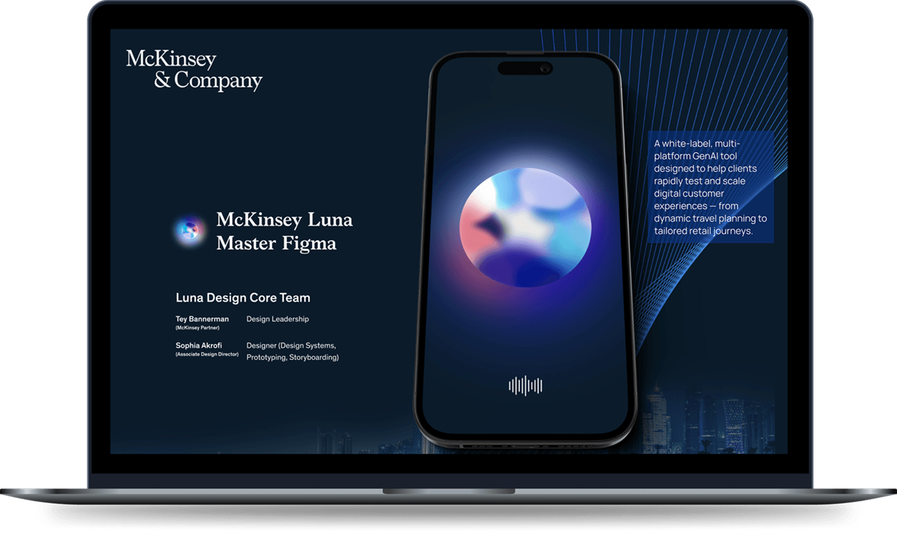
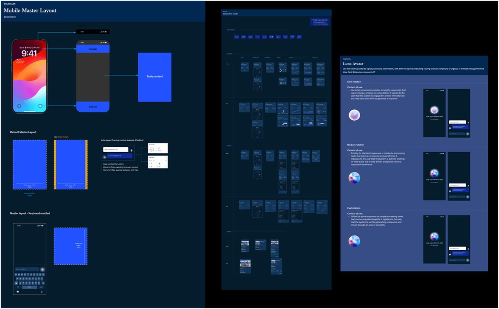
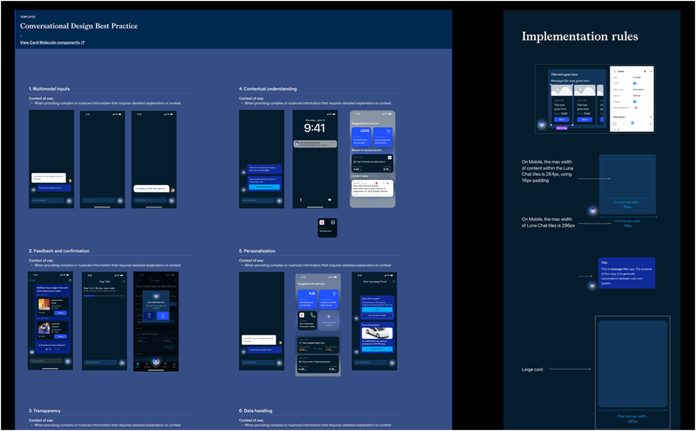
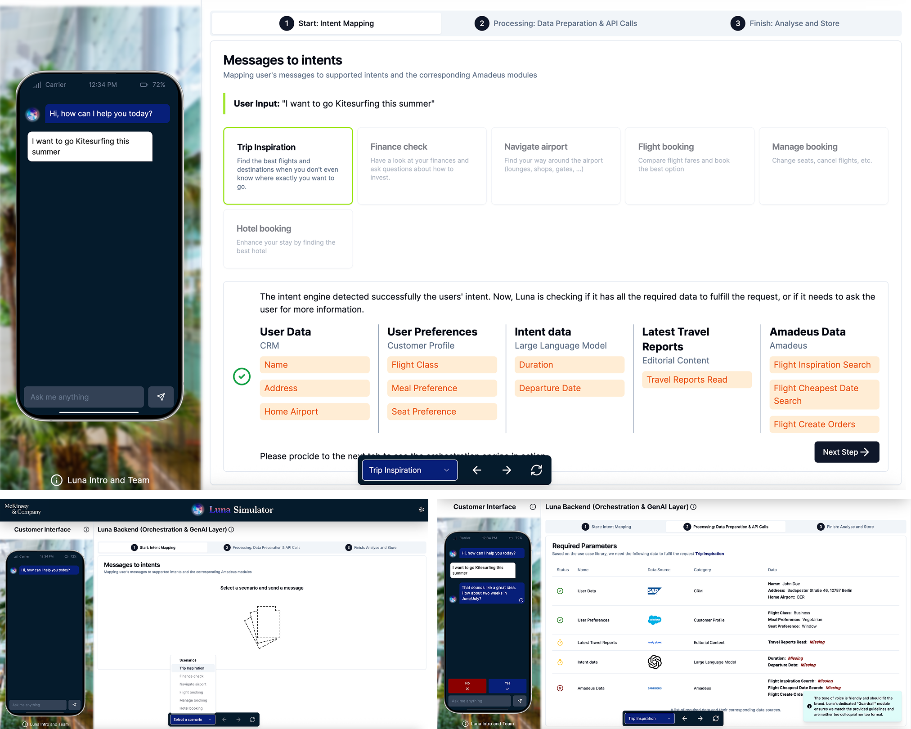

AI copilot for customer experience
at enterprise scale.
A modular, agent-based platform that scaled conversational experiences across 10+ global MVPs — without re-design per client.
Scope. Product strategy, conversational UX, white-label architecture, agent orchestration patterns, scalable design system.
Outcome. 10+ MVPs · 20–30% NPS uplift · 30–40% cross-sell · 60% faster client onboarding.
Stop building bespoke per client. Design a platform.
McKinsey's enterprise clients each wanted their own GenAI copilot. The wrong play was to build one each. The right play was to architect a modular platform — where the conversational engine, reasoning framework, and UI system could be parameterised and re-skinned.
Three patterns. One reasoning engine. Pick one.
Not every workflow needs the same shape. Single agents handle straight-line tasks. Sequential chains add control. Parallel flows reduce latency. The interaction model had to flex with the workflow — and surface the agent's reasoning to keep the user in the loop.
Built once. Re-skinned ten times.
A parameterised platform where conversational engine, reasoning framework and UI system all flex via configuration — not redesign. Each implementation was a deployment, not a build.
Build the platform once. Deploy it many times.
Rather than building custom solutions per client, we architected a modular platform where the conversational engine, reasoning framework, and UI system could be configured and extended without rework.
- Conversational engine + reasoning framework as configurable surfaces
- Brand voice, content rules and interaction patterns as parameters
- Underlying architecture stays consistent — implementations vary

Flexible dialogue. Configurable rules. No UI rework.
Dialogue flows that adapt to different brand voices, customer contexts and business objectives. Reasoning cards and content behaviour rules so each implementation reflects its industry and market — without touching the UI.
- Configurable reasoning cards per industry
- Content behaviour rules with compliance + trust signals built in
- Atomic design system, multi-platform component libraries

White-label + iterative prototyping across verticals.
The platform flexed across automotive, financial services, retail and hospitality. Multiple rounds of prototypes validated output quality, user understanding and workflow fit for each client's reality.
- Variable brand assets, adjustable reasoning styles, configurable inputs
- Iterative prototyping per client scenario — across 10+ MVPs
- 60% reduction in implementation time vs. custom builds

LLMs don't always follow multi-step logic perfectly. The interaction layer is what makes them trustworthy.
A key design consideration was the non-deterministic nature of AI. Interaction design had to balance user flexibility, orchestration control and system reliability — exposing reasoning when it builds trust, hiding it when it adds noise.

In the real world.
Tailored flows, content behaviour rules and UI assets that demonstrated the system's versatility — from automotive to financial services to hospitality.
Numbers that landed.
A scalable orchestration layer adopted across leadership enablement, client demos and active product builds — autonomous teams now configure and deploy independently.
Luna positioned not just as an assistant, but as a scalable orchestration layer for AI-powered customer experiences — designed for autonomous teams to configure and deploy independently.
McKinsey · 10+ deploymentsWhat this taught me.
- 01Designing AI-native product experiences that scale across complex enterprise workflows.
- 02Defining interaction models for agent-based systems operating under uncertainty.
- 03Structuring multi-agent workflows to balance reliability, control and flexibility.
- 04Translating emerging AI capabilities into production-ready, scalable product systems.